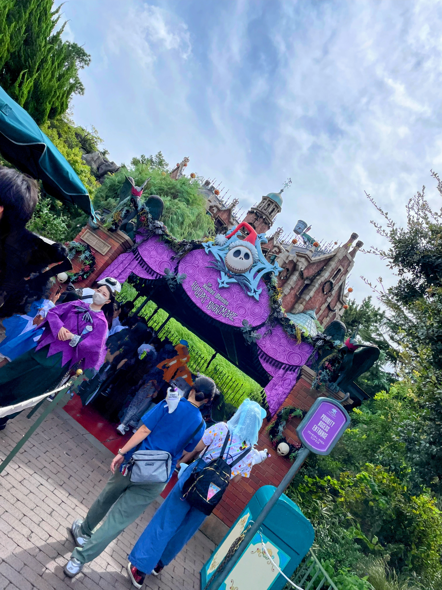
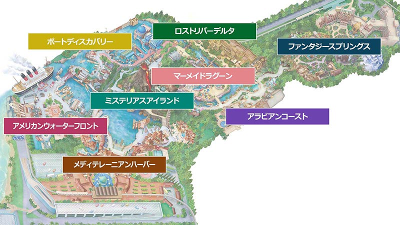

Tokyo Disney Resort BGS Chronicles An archival record of theme park history & lore
Curator's Profile
Archived Records

Splash Mountain
小動物たちの暮らす泥地を襲った大洪水と、ブレア・ラビットにまつわる数々の伝承と旅の物語。

Big Thunder Mountain
無人鉱山を暴走する鉱山列車と、開拓者たちの歴史。大自然の精霊の警告を無視したゴールドラッシュの末路。

Haunted Mansion
999人の亡霊が暮らすゴシック様式の館。代々の居住者にまつわるエピソードと、奇妙な仕掛けの数々。

Beauty and the Beast
深い森に佇むお城と魔法の薔薇の伝説。フランスの片田舎を再現した美しい造形と建築様式。

Tomorrowland
近未来の都市デザインと宇宙開発への夢。銀河系を結ぶスペースポートに課せられたルールと条例。

TDS Spatial Epic
「海のテーマパーク」に広がる、全8つのテーマポートにおける固有の歴史と時代背景の考察。
Tower of Terror
1912年のニューヨーク。ホテル・ハイタワーで起きたオーナー失踪事件と、謎の偶像を巡る社会的背景。

Sindbad's Voyage
船乗りシンドバッドと相棒チャンドゥの航海記。エリアのリニューアルに伴う、演出と音楽の変遷史。

Fantasy Springs
精霊が宿る魔法の泉の伝承と、それらを発見した公爵夫人の別荘にまつわる土地の記録。

Soarin'
探検家学会（S.E.A.）初の女性会員カメリアの功績と、飛行への執念を展示するファンタスティック・フライト・ミュージアムの全容。

Raging Spirits
中央アメリカの古代遺跡で発見された祭壇。対立する「火」と「水」の神々の偶像と、調査隊の足場の記録。

Indiana Jones
ロストリバーデルタに隠された「失われた若さの泉」。ジョーンズ博士の調査活動とパコによる神殿ツアーの全貌。
The Maihama Chronicle
舞浜におけるパーク開発と空間づくりの変遷
私たちが訪れる東京ディズニーリゾート（TDR）の背景には、オリエンタルランド（OLC）とウォルト・ディズニー・カンパニーの度重なる対話と、テーマパークづくりへの真摯な取り組みが存在します。
I. アメリカ国外初のディズニーパーク
1983年4月15日、東京ディズニーランド（TDL）はアメリカ国外で初のディズニーテーマパークとして開園しました。当時、ディズニー本社は海外展開におけるリスクを考慮し、OLCがライセンス契約を結ぶ形で建設されました。開園初年度から1000万人を超えるゲストが訪れ、大きな成功を収めることになりました。
II. 映画スタジオ計画から「海」への方針転換
TDLの成功を受け、当初ディズニー側から提案されていたのは映画スタジオをテーマにしたパークでした。しかしOLC側はこれを見直し、1992年に「海」をテーマにした世界で唯一のパーク『東京ディズニーシー』の開発へと転換することになります。
III. 幻のシンボルと、エントランスに隠された演出
ディズニー側が当初提案した「巨大な灯台」というシンボルは、「日本人の感性において哀愁や寂しさを連想させやすい」として見送られました。議論の末に誕生したのが「アクアスフィア」と「プロメテウス火山」です。ホテル・ミラコスタ下の薄暗い通路を歩くことで日常から非日常へと切り替えさせる空間演出も、緻密な計算によるものです。
IV. 経年美化を前提とした空間づくり
2001年に開業したTDSは、総工費約3350億円という大規模なプロジェクトとなりました。OLCとイマジニアたちは、長期的な運用を見据えてデザインや建築素材に強くこだわりました。本物のレンガや石、木材を使用し、エイジング技術を緻密に施すことで「年々味わいが増す」空間を実現しています。
V. ファンタジースプリングスへの繋がり
2024年誕生の「ファンタジースプリングス」には過去最大級の約2500億円が投じられました。海、川、そして全ての源流である「泉（スプリングス）」へと繋がる空間構成は、東京ディズニーシーのコンセプトをさらに深化させています。